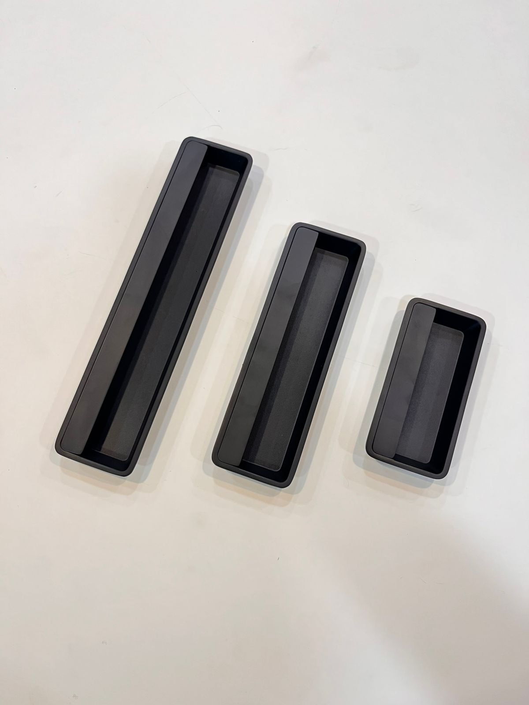
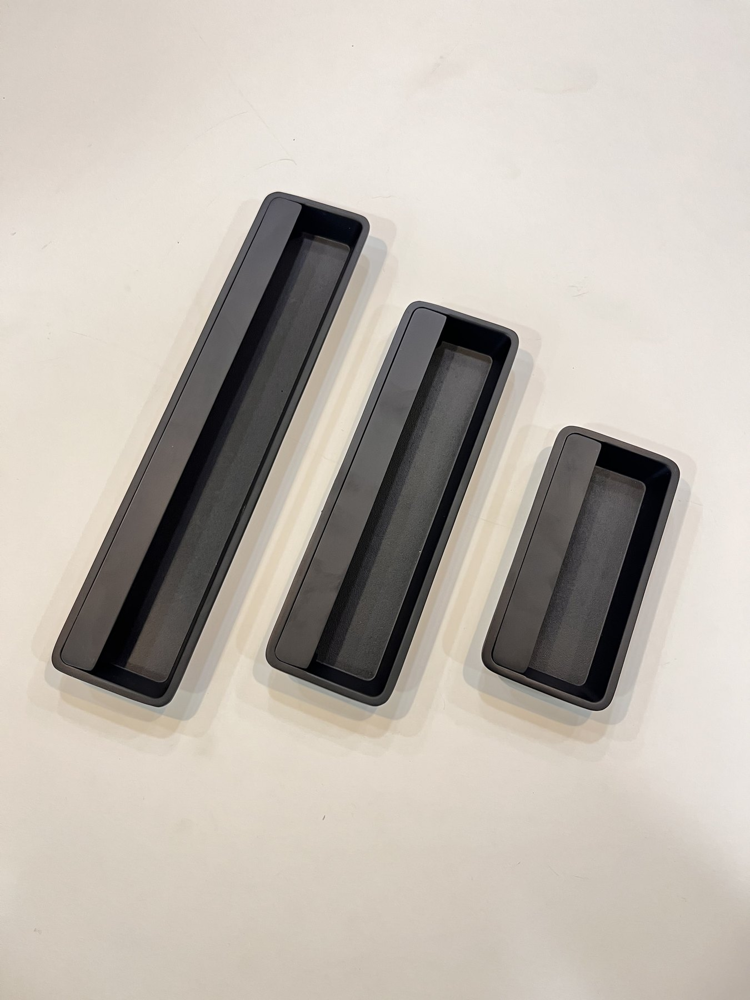
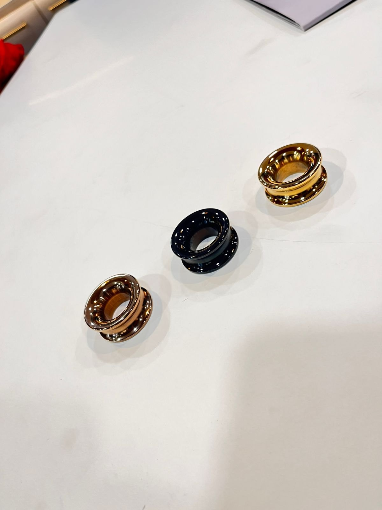
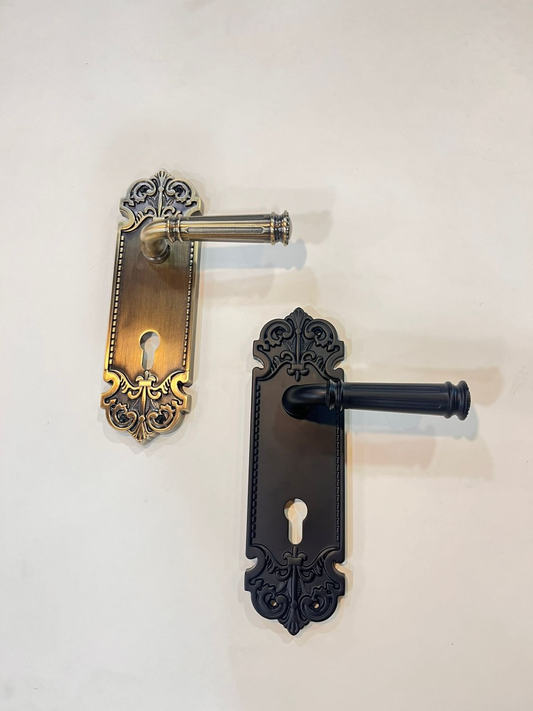
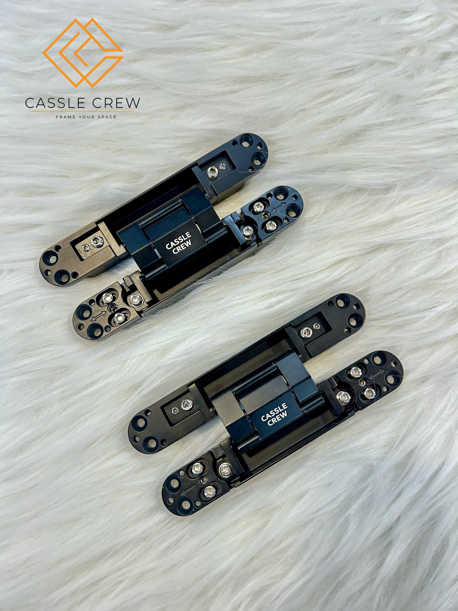
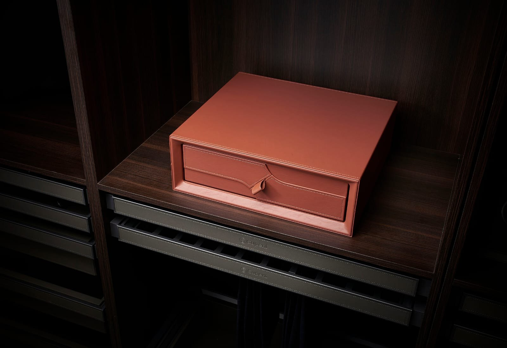

View product ↗
Cassle Crew · Hardware & Fittings
The finishing touch makes the space.
Explore a considered collection of cabinet handles, decorative knobs, door hardware, hinges and wardrobe fittings—details that bring furniture and interiors together.
HardwareArchitectural fittingsStorage details
Browse by category
Find the right detail.
Start with a category to explore the supplied product collection, organized by the type of fitting shown.

A considered grip
Cabinet Handles
Bar pulls and cabinet handles that bring a clean finishing touch to drawers, cupboards and furniture fronts.

Small details, big impact
Cabinet Knobs
Decorative knobs in varied shapes and finishes for cabinetry and furniture.

Designed to be handled
Door Hardware
Door lever and backplate styles presented across the supplied collection.

Made for movement
Hinges
Cabinet hinge options from the supplied image collection.

Make space work smarter
Wardrobe & Drawer Fittings
Wardrobe and drawer organization accessories shown in the supplied photographs.

The details matter
A practical collection. A considered finish.
From the feel of a cabinet pull to the function of a wardrobe fitting, hardware plays a part in how a space looks and works. Browse the collection visually and identify the styles that suit your project.
Cabinet & furnitureHandles and decorative knobs
DoorsLever styles and backplates
MovementCabinet hinge options
OrganizationWardrobe and drawer fittings
Have a project in mind?